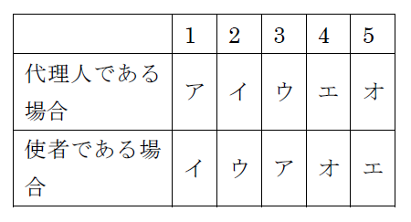

1 未成年者が委任にる代理人としてした法律行為については、行為能力の制限を理由として取り消すことができる。
2 Ａが成年被後見人又は被保佐人である場合に、ＡがＣの任意代理人として不動産を購入した場合において、Ｂの同意を得ていないときは、Ｂの同意を得ていないことを理由として、いずれもその売買契約を取り消すことができる。なお、Ｂは、Ａが成年被後見人である場合の成年後見人又はＡが被保佐人である場合の保佐人とする。
3 Ａの代理人であるＢは、Ｃに対し物品甲を売却した(なお、この売却行為は、商行為には当たらないものとする。)。ＢがＡのためにする意思をもって、Ａの代理人であることを示して、Ｃに対し物品甲を売却した場合であっても、Ｂが未成年者であるときは、Ｂがした意思表示は、Ａに対して効力を生じない。
4 Ａは、Ｂの任意代理人であるが、Ｂから受任した事務をＣを利用して履行しようとしている。ＡがＣを復代理人として選任する場合には、Ｃは、意思能力を有することは必要であるが、行為能力者であることは要しない。
5 ＡがＥに対しガン予防の薬品の購入を委任し、ＥがＡの代理人としてＢから甲薬品を購入した場合、Ｅが未成年者であったとしても、Ａは、Ｂとの間の売買契約を取り消すことができない。
6 他人の任意代理人として代理行為をするためには、成年被後見人は、成年後見人の同意を得ることが必要であるが、被保佐人は、保佐人の同意を得ることを要しない。
7 代理権は、代理人が後見開始の審判を受けたことによって消滅する。
8 代理人が保佐開始の審判を受けた場合には、代理権は消滅する。
9 教授： ＡとＢとの間で、Ａの代理人としてＡの所有する甲不動産をＣに売り渡す契約を締結する権限をＢに与える委任契約を締結したという事例を前提として、代理について考えてみましょう。Ｂに代理権を授与した後、Ａが破産手続開始の決定を受けた場合において、Ｂの代理権は消滅しますか。
学生： 本人が破産手続開始の決定を受けたことは代理権の消滅事由とされていませんので、Ｂの代理権は消滅しません。
10 代理人が本人のためにすることを示さずに意思表示をした場合であっても、その権限内において本人のためにした行為は、本人に対して直接にその効力を生ずる。
11 Ａの代理人であるＢが、その代理権の範囲内でＡのためにすることを示さずにＣとの間で契約を締結した場合において、ＢがＡのために契約を締結することをＣが知ることができたときは、ＡＣ間に契約の効力が生ずる。
12 ＡがＢ所有の甲建物を売却するための代理権をＢから授与されている場合について。
教授： ＡがＢのためにする意思を有していたものの、Ｂの代理人であることを示さずに、Ｃとの間で甲建物の売買契約を締結し、その契約書の売主の署名欄にＡの名前だけを書いた場合はどうなりますか。
学生： ＣにおいてＡがＢのために売買契約を締結することを知ることができたときは、ＢＣ間に売買契約が成立します。
13 Ｂの代理人Ａは、Ｂのためにすることを示さずに、ＣからＣ所有のマンションを購入する旨の契約を締結した。この場合、当該契約をＡがＢのために締結することを契約当時Ｃが知っていたときは、Ｂは、当該マンションの所有権を取得することができる。なお、Ａ、Ｂ及びＣは、いずれも商人でないものとする。
14 ＡがＢ所有の甲建物を売却するための代理権をＢから授与されている場合について。
教授： ＡがＢの代理人であることを示さずに、自らがＢであると称して、Ｃとの間で甲建物の売買契約を締結した場合に、ＢＣ間に売買契約は成立しますか。
学生： ＡはＢの代理人であることを示していないので、たとえＡがＢのためにする意思を有していたとしても、ＢＣ間に売買契約は成立せず、ＡＣ間に売買契約が成立することになります。
15 教授： Ｂが、Ａから授与された代理権の範囲内でＡの代理人としてＣとの間でＡの所有する甲不動産を売り渡す契約を締結したものの、その際、ＢがＣから受け取った売買代金を着服する意図を有していた場合には、当該契約の効力は、Ａに帰属しますか。
学生： Ｃが、Ｂの代金着服の意図を知らなかったのであれば、知らなかったことについてＣに過失があったとしても、当該契約の効力は、Ａに帰属します。
16 教授： ＡがＢ所有の甲建物を売却するための代理権をＢから授与されており、ＡがＢの代理人であることを示して、Ｃとの間で甲建物の売買契約を締結したものの、Ａが、当初から、Ｃから受け取った売買代金を着服するつもりであったときは、どうなりますか。
学生： 代理の要件に欠けるところはないので、たとえＣがＡの意図を知っていた場合であっても、ＢＣ間に売買契約が成立します。
17 Ａの代理人であるＢは、Ｃに対し物品甲を売却した(なお、この売却行為は、商行為には当たらないものとする。)。Ｂが自己又は第三者の利益を図るために物品甲を売却した場合であっても、それが客観的にＢの代理権の範囲内の行為であり、ＣがＢの意図を知らず、かつ、知らないことに過失がなかったときは、Ｂがした意思表示は、Ａに対して効力を生ずる。
18 Ａの代理人Ｂが自己の利益を図るために権限内の行為をした場合において、相手方ＣがＢの意図を知ることができたときは、Ａは、Ｃに対し、Ｂの行為について自己に効果が帰属しないことを主張することができる。
19 ＡとＢとの間で、Ａの代理人としてＡの所有する甲不動産をＣに売り渡す契約を締結する権限をＢに与える委任契約を締結したという事例について。
教授： Ｂが、Ｃからも代理権を授与され、ＡとＣ双方の代理人としてＡＣ間の売買契約を締結した場合には、当該売買契約の効力はどうなりますか。
学生： ＡＣ間の売買契約は、無効となり、追認することもできません。
20 Ａは、Ｂ及びＣからあらかじめ許諾を得た場合には、Ｂ及びＣの双方を代理してＢＣ間の契約を締結することができる。
21 同一人物が、債権者及び債務者双方の代理人として代物弁済をする場合であっても、債権者及び債務者双方があらかじめ許諾していたときは、無権代理行為とはみなされない。
22 ＡがＥに対しガン予防の薬品の購入を委任し、ＥがＢから甲薬品はガンの予防に抜群の効果があるとの虚偽の説明を受け、これを信じてＡの代理人として甲薬品を購入した場合、Ａは、甲薬品がガンの予防に効果がないことを知っていたとしても、Ｂとの間の売買契約を取り消すことができる。
23 Ａは、Ｂの代理人として、Ｃとの間で金銭消費貸借契約及びＢ所有の甲土地に抵当権を設定する旨の契約（以下両契約を合わせて「本契約」という。）を締結した。本契約が第三者ＤのＡに対する強迫に基づくものである場合、Ｃがこれを過失なく知らなくても、Ｂは、本契約を取り消すことができる。
24 ＡとＢとの間で、Ａの代理人としてＣの占有する高名な乙絵画を買い受ける契約を締結する権限をＢに与える委任契約を締結していた。Ｂが、Ａの指図に従いＣとの間で乙絵画の売買契約を締結してその引渡しを受けたものの、Ｃが乙絵画について無権利者であった場合に、Ｂが善意無過失であったとしても、Ａが善意無過失でなければ、Ａは乙絵画を即時取得することができない。
25 Ａの代理人であるＢは、Ｃに対し物品甲を売却した(なお、この売却行為は、商行為には当たらないものとする。)。Ｂの意思表示がＣの詐欺によるものであったときは、Ｂは、その意思表示を取り消すことができるが、Ａは、Ｂによる意思表示を取り消すことができない。
26 Ａは、Ｂの代理人として、Ｃとの間で金銭消費貸借契約及びＢ所有の甲土地に抵当権を設定する旨の契約（以下両契約を合わせて「本契約」という。）を締結した。本契約がＡのＣに対する詐欺に基づくものである場合、Ｂがこれを過失なく知らなくても、Ｃは、本契約を取り消すことができる。
27 Ａの代理人Ｂが相手方Ｃとの間で売買契約を締結した場合、Ｃの意思表示がＡの詐欺によるものであったときでも、Ｂがその事実を知らなかった場合には、Ｃは、その意思表示を取り消すことができない。
28 次の対話は、自己契約・双方代理の禁止に関する教授と学生の対話である。教授の質問に対する次のアからクまでの学生の回答のうち、判例の趣旨に照らし正しいものの組合せは、後記1から5までのうちどれか。（H11-04）（改）
教授： 民法第108条の規定によって保護される利益は何だと考えますか。
学生：ア 不当な契約を一般的に防止しようとする公益だと考えます。
イ 不当な契約から生ずる損害を避ける当事者の利益だと考えます。
教授： それでは、民法第108条に違反してされた法律行為の効力はどうなりますか。
学生：ウ 無効となり、追認をすることはできません。また、本人が事前に双方代理の行為について同意を与えることはできません。
エ 無権代理となり、追認をすることができます。また、本人が事前に双方代理の行為について同意を与えていれば、代理行為の効力は本人に及びます。
教授： 不動産の所有権移転の登記の申請について、同一の司法書士が登記権利者と登記義務者の双方の代理をすることが可能とされているのは、なぜですか。
学生：オ 登記の申請について、同一人が登記権利者と登記義務者の双方の代理をすることは、原則として民法第108条に違反するので、許されませんが、申請者双方の同意を得ている場合には、それが許されるからです。
カ 登記の申請は、既に効力を生じた権利変動の公示を申請する行為であり、民法第108条ただし書にいう「債務の履行」に準ずる行為に当たるからです。
1 アウオ 2 アエカ 3 イウカ 4 イエオ 5 イエカ
（参考）
民法
第108条 同一の法律行為について、相手方の代理人として、又は当事者双方の代理人としてした行為は、代理権を有しない者がした行為とみなす。ただし、債務の履行及び本人があらかじめ許諾した行為については、この限りでない。
29 Ａは、Ｂを利用して、Ｃと売買契約を締結し、甲動産を取得しようとしている。この事例に関する次のアからオまでの記述のうち、ＢがＡの代理人である場合についての記述として正しいものとＢがＡの使者である場合についての記述として正しいものとの組合せは、後記表の1から5までのうちどれか。（H16-05）
ア Ｂが、Ｃに対し、売買の目的物を誤ってＣの所有する乙動産と表示してしまい、その表示内容による売買契約が締結された場合において、誤った表示をしたことにつきＡに重過失があるときは、Ａは、乙動産の代金支払を免れることができない。
イ Ｃが甲動産の所有権を有しない場合において、Ａは、Ｃが甲動産の所有者であるものと誤信し、かつ、誤信したことにつき無過失であったが、Ｂは、Ｃが甲動産の所有者でないことにつき悪意であったときは、Ａは、甲動産を即時取得することができない。
ウ 甲動産の購入に際し、Ｂには意思能力がある必要はないが、Ａには行為能力がある必要がある。
エ Ａは、Ｂに対し、売買代金額に関する決定権限を付与することができる。
オ Ａの許諾がない場合には、Ｂは、やむを得ない事由がない限り、その任務を他の者にゆだねることができない。
